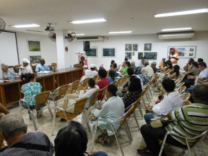
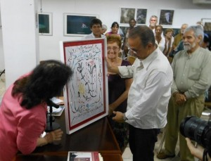

Encuentro Nacional de Poesía 2015.
Par: Camilo García Lopez-trigo.
Diversidad de criterios sobre la creación poética en Cuba durante las últimas décadas, sin dejar de analizar sus raíces históricas, marcaron los dos últimos días del Encuentro Nacional de Poesía 2015, que organizó la Sección de Poesía de la Asociación de Escritores en la sala Rubén Martínez Villena de la UNEAC entre el 3 et le 5 Juin.
Varias fueron las ponencias escuchadas que provocaron una amplia reacción del público durante los debates. El jueves fueron las presentaciones de Ricardo Alberto Pérez, sobre la original obra del cubano judío residente en Nueva York José Kozer, y los jóvenes investigadores Llellys del Rosario, con la poética “de lo cubano” de Fina García Marruz, e Ibrahim Hernández, sobre las “discontinuidades” de Roberto Friol, detallando las formas arquetípicas de su poesía y sus relaciones con la historia. De plus,, Ivette Fuentes disertó sobre el universo poético de Cleva Solís, Caridad Atencio sobre la “teluricidad” en la obra de Alberto Acosta y Víctor Rodríguez Núñez se salió del programa para realizar una improvisada y crítica intervención sobre la poesía de finales de los 70 y principios de los 80 del pasado siglo.


Ambos días los debates estuvieron centrados en los problemas que confronta el género con la crítica literaria, la promoción y la comercialización del libro y la poesía, la relación de poetas e investigadores con el “canon” y las interpretaciones sobre generaciones y tendencias estilísticas. Se abundó sobre la calidad poética y sus relatividades, la ruptura al desarrollo lógico de la poesía en Cuba que significó el “Caso Padilla” – como muestra de desconfianza a la intelectualidad, que aún pervive en algunas personas – y el esplendor de los 80 como la oportunidad que esperaban varias generaciones para darse a conocer.
Se habló del “conversacionalismo”, el “realismo socialista”, el “costumbrismo”, de la conciencia “disyuntiva”, de cúspides y bases en la pirámide creadora y de la falta de imaginación a la hora de vender la poesía, que bien pudiera convertirse en un importante “renglón exportable” – tan importante como el níquel, bromeó Manzano. A pesar de los torrenciales aguaceros que acompañaron las tardes del encuentro, en los jardines de la UNEAC se vendieron libros, se hicieron lecturas y se presentaron revistas y textos poéticos de Roberto Manzano, Reina María Rodríguez, Antonio Machado y Federico García Lorca, Parmi d'autres.
El Presidente de la Asociación de Escritores, le poète Alex Pausides, señaló al final que encuentros como estos han sido y serán el principal objetivo de trabajo de la Asociación, para tratar de que la membresía participe en el diseño de la labor de la UNEAC, en la elaboración de propuestas concretas para desarrollar la literatura cubana. “Lo que se ha dicho en estos días forma parte de lo que debemos hacer”, expresó, indicando que también habría que darle espacio a aquella poesía que no está en el centro del discurso literario, “aquella que viene de las márgenes, que enriquece y fortalece el discurso central de nuestra poesía”.
Felicitó a la Sección de Poesía y a quienes han participado estos tres días de encuentro por haber sido capaces de reunir a un grupo de gente interesada, que sabe y aporta desde el rigor, la pluralidad y el respeto, destacando “la enorme diversidad, riqueza y honestidad con que se ha debatido”.
Casi antes del cierre, el cantautor Ireno García le dedicó al encuentro un concierto en el que se le cantó a Eliseo Diego, en homenaje por los 95 años que cumpliría en 2015.
Cierre con el poeta héroe
Los últimos minutos del evento vinieron a materializar un viejo sueño: la primera lectura de poemas en la UNEAC del Héroe de la República de Cuba Antonio Guerrero, quien estuvo acompañado en la mesa por los primeros escritores que tuvieron contacto con su obra: Aitana Alberti, Roberto Fernández Retamar, Edel Morales y Eduardo Heras León, quienes explicaron su relación con el héroe.
Edel, quien recibió los primeros versos de Tony en 2001, sintió en ellos desde el primer momento “una intensidad, un latido que sólo podía ser transmitido desde un alma sensibilizada con lo humano y lo poético”. Además resaltó la importancia del arte no como lujo de personas ricas, sino como una necesidad humana que puede contribuir al enriquecimiento y la resistencia del ser humano ante momentos tan difíciles como la prisión.
Aitana contó la hermosa amistad que surgió entre ellos, a partir de los poemas de Rafael Alberti, y Retamar expresó la emoción de encontrarse con un héroe, sobre todo por la oportunidad de prologar uno de sus libros. Heras León, quien se autodefinió como narrador fundamentalmente, indicó el placer que sintió de haber editado su primer libro de poesía con un libro de Antonio Guerrero, Après 40 años de labor como editor.
D'un autre côté, Tony compartió con el colectivo de poetas reunidos con gran desenfado y mucha humildad a quienes les narró su encuentro con la poesía desde los primeros momentos de la prisión, el proceso de aprendizaje de rimas y estructuras poéticas como forma de escape de los males del encierro y, avant tout, como sentido de libertad, a través de la cual se sintió acompañado todo ese tiempo con tantos poetas de todo el mundo, entre los que leía – destacando a Rafael Alberti, Retamar, Silvio Rodríguez – y quienes le contactaban.
“Ya no éramos el animal dentro de la jaula, (con la poesía) ya era alguien que rompía la jaula y salía por el aire (…). La poesía jugó un papel esencial en esa libertad y sirvió como arma para demostrar al mundo (…) la cara de Cuba, la cara de hombres educados en la cultura y los valores de la Revolución”, subrayó.
